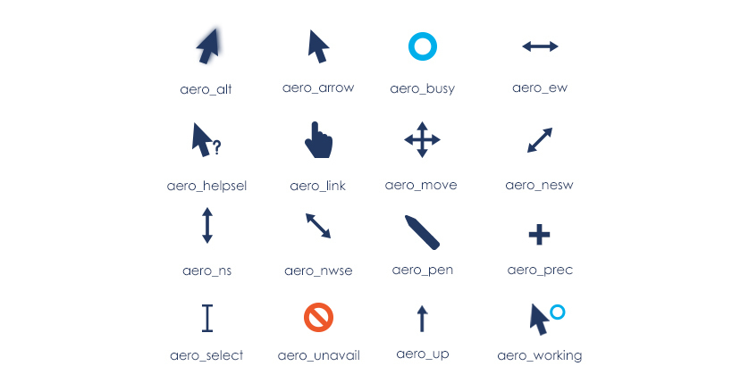

Далі кожен з 4-ох етапів тестування верстки розглянемо більш детальніше.
Етап 1. Візуальна частина
На цьому етапі необхідно перевірити:
- точність відповідності макету (зазвичай, використовується інструмент Pixel Perfect);
- сітку (вирівнювання по горизонталі/вертикалі);
- масштаб (від 75% до 150%);
- зміну розміру текстового поля;
- виділення полів у фокусі;
- верстку у різних роздільних здатностях (розширеннях), а саме:

Етап 2. Доступність
На цьому етапі необхідно перевірити:
- наявність необхідних елементів;
- розмір елементів та їх колір;
- чи виділяється текст в текстових блоках;
- чи натискається іконка логотипу;
- чи натискаються клікабельні елементи (посилання/кнопки);
- розташування елементів відносно один одного;
- чи набуває курсор різну форму при наведенні на клікабельні елементи.
З типами курсора можна ознайомитися на наступному зображенні.
Етап 3. Корректна робота
На цьому етапі необхідно перевірити:
- величину елемента – необхідно виміряти його і порівняти зі специфікацією. Можна це зробити за допомогою Page Ruler;
- коректність шрифтів (колір, розмір, назва) – розширення для ідентифікації шрифтів Fontface Ninja для Safari і Chrome цілком ефективно для перевірки;
- кольори інтерфейсу – для даної перевірки добре підійде ColorZilla;
- контент – для перевірки на наявність орфографічних або граматичних помилок буде корисною програма SpellChecker;
- фавікон – це обов'язкова частина, відсутність якої може зіпсувати надалі думку користувача;
- стандарти HTML/CSS – для даної перевірки можна використовувати W3C;
- стандарт заголовків у всьому додатку:

- тег tіtle сторінки – він відображає короткий опис вмісту сторінки. Саме через це не можна про нього забувати;
- кнопку «Back» – її перевіряють, так як є можливість що при переході на якусь сторінку і натисканні на браузерну кнопку «Back» можна не повернутися на попередню;
- масштабованість – це актуально при тестуванні не на ПК, а на інших пристроях (телефон, планшет);
- кроссбраузерність – так як всі браузери відрізняються один від одного, тобто можливість побачити дефект на одній і тій самій сторінці, але в різних браузерах:

- прокрутку – щоб побачити додаткову інформацію у вікні, необхідна можливість скролінгу;
- браузерні розширення – зовнішній вигляд програми залежить і від них (наприклад, VPN, AdBlock), тому дана перевірка також є важливою.
Дуже часто одночасно з версткою перевіряють і локалізацію. Важливо розуміти, що це не її частина.
Локалізація - це переклад текста у веб-додатку і його адаптація у певному мовному середовищі.
Ця перевірка проводиться досить просто, хоча і з випливаючими після дефектами. Було б непогано, якщо б цим займався якийсь перекладач або людина, яка знає певну мову. Адже тестувальник використовує будь-який онлайн-перекладач. На цьому етапі можна зіткнутися з безліччю труднощів. наприклад:
- сума символів в перекладеному слові може бути більше, ніж в оригіналі. Це може привести до того, що інтерфейс буде відображатися некоректно:

- абревіатури або переводяться, або транслітеруються, або залишаються як є;
- формати грошових одиниць – валюта повинна відображатися відповідно до обраної мови;
- в залежності від мови введення можуть відрізнятися також параметри шрифту;
- робота пошуку перевіряється у всіх локалізаціях, тому що результат може бути дуже різним;
- мета-інформація (keywords/title/description) є дуже важливою складовою, адже просування сайту багато в чому залежить від неї;
- деякі мови мають особливість – зворотне написання (іврит, арабська). Наприклад: зліва направо пишуться числа, значки та іконки віддзеркалюються, назви програм не перекладаються, немає переносів, кнопки редагування Backspace і Delete працюють навпаки.
Етап 4. Помилки 404
Розглянемо більш докладно поняття помилки 404. Її наявність означає те, що користувач звернувся до сайту за неправильною url-адресою, тобто сторінки по такому посиланню в даний момент не існує. Але це не означає, що її ніколи не було. Сторінка могла бути переміщена, було змінено її назву або вона просто видалена. Перевірка на наявність цієї помилки необхідна, щоб уникнути втрати трафіку і просідання позицій. Помилка 404 найпоширеніша і впізнавана.